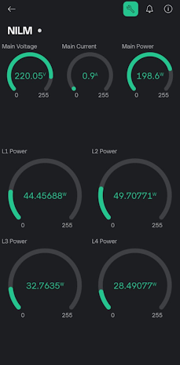
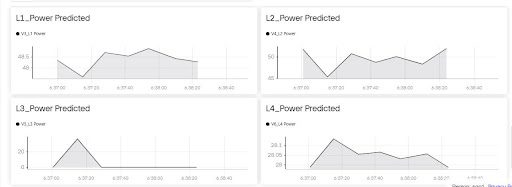
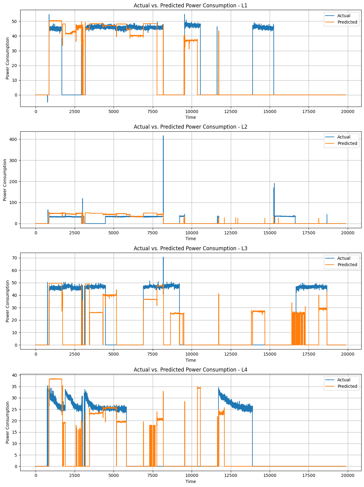
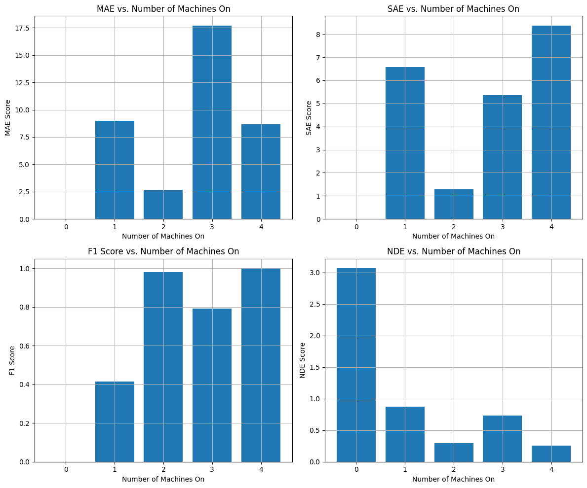
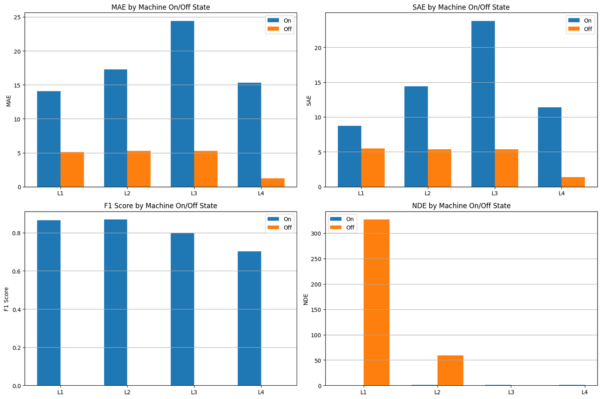
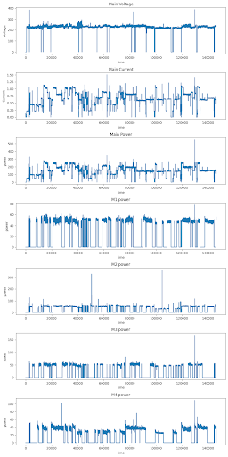

Overview
Textile factories run many identical motor-driven machines, but energy is usually metered for the whole floor. Installing a meter on every machine is expensive. NILM takes another route: measure the total supply once, then use a model to work out how much power each machine draws.
Our team built the full pipeline: voltage and current sensing hardware, wireless data logging to the cloud, a custom dataset, a fine-tuned MATNILM model and a live dashboard in the Blynk app. I led the project and was responsible for planning, simulation, data collection, the hardware setup, model fine-tuning and code.
Problem statement
Bangladesh's textile industry uses a lot of energy and often relies on outdated monitoring. To find waste, managers need machine-level data, not just a monthly total. The hard part is that cutting machines are driven by identical induction motors, so their electrical signatures look almost the same, which makes disaggregation much harder than for the varied appliances in typical home datasets.
Engineering objectives
- Build low-cost hardware that measures voltage, current and power on the main line and on each load line.
- Collect a new, labelled dataset from identical induction motors under many on/off combinations.
- Adapt and fine-tune the MATNILM deep-learning model to estimate each load's power from the main-line measurements.
- Deploy the model for real-time monitoring with remote access on mobile and web.
System architecture
Five voltage and current sensor pairs measure the main line and four load lines (L1–L4). An Arduino Mega 2560 digitizes the signals and computes voltage, current and power, shows them on a 20×4 LCD, and passes them to an ESP8266 that sends the data over Wi-Fi to Google Sheets. Google Colab trains and runs the model, and results are pushed to the Blynk app.


Methodology
- Hardware build. Three identical 50 W induction motors (L1–L3, representing cutting machines) and two 15 W bulbs in series (L4, auxiliary lighting) were wired to a test board with a sensor pair on each line and on the main supply.
- Data collection. Over 15 days in the lab, 16 load-state combinations were tested manually. Samples were logged about every 5 seconds on average, giving 180,631 samples of main and per-line voltage, current and power.
- Preparation. Data was normalized and split by time (not shuffled): 81.0% training (about 90 h), 7.6% validation and 11.4% testing (about 25 h).
- Model. MATNILM, originally trained on the REDD and UK-DALE home datasets, was adapted to take main power, voltage and current as inputs and output the power of each of the four lines. Training used batch size 32, learning rate 0.001, hidden size 64, dropout 0.1 and sequence length 864, for 5 epochs with data augmentation.
- Real-time deployment. New readings arrive in Google Sheets; an Apps Script passes them to the Python model in Colab, and predicted per-line power is written back and sent to Blynk virtual pins for live display.
Hardware and software
Hardware
- ZMPT101B voltage sensors and ZMCT103C current sensors (5 pairs)
- Arduino Mega 2560
- ESP8266 Wi-Fi module
- 20×4 LCD
- 3 × identical 50 W induction motors, 2 × 15 W bulbs
Software & tools
- Python, TensorFlow/Keras, NumPy, Pandas, scikit-learn
- MATNILM model (adapted from jxiong22/MATNilm)
- Google Colab, Google Sheets, Google Apps Script
- Blynk IoT platform
Implementation photographs



Results
On the offline test set the model tracked total energy reasonably well and performed best when one machine was running. When two or more identical motors ran at the same time, their overlapping signatures caused energy to be assigned to the wrong machine.




Performance metrics
Real-time deployment results (averaged over the four loads), as reported in the paper and on my CV:
| Setting | Metric | M1 | M2 | M3 | M4 | Average |
|---|---|---|---|---|---|---|
| Offline test | MAE (W) | 8.79 | 9.83 | 12.68 | 6.20 | 9.38 |
| Offline test | F1 | 0.79 | 0.79 | 0.68 | 0.66 | 0.73 |
| Offline test | NDE | 0.63 | 0.86 | 0.73 | 0.76 | 0.75 |
| Real-time | MAE (W) | 6.93 | 25.51 | 10.55 | 10.74 | 13.43 |
| Real-time | F1 | 0.87 | 0.82 | 0.90 | 0.69 | 0.82 |
| Real-time | NDE | 0.47 | 0.68 | 0.51 | 0.70 | 0.59 |
Key findings
- Aggregate energy was tracked reasonably well, but per-machine disaggregation was difficult when identical motors ran together.
- Overlapping on-states of identical motors were the main source of error; L2 showed the largest mismatch during spikes and transients.
- After deployment, MAE rose (mainly for M2) while average F1 and NDE improved.
- The low sampling rate (about one sample every 5 s), noisy sensor readings and a small dataset limited accuracy.
- Next steps: higher-frequency sampling, longer and more varied industrial datasets, architectures designed for identical loads, and hybrid transient/steady-state NILM.
Links
- GitHub repository (code, dataset and figures)
- arXiv:2601.01616 · doi:10.48550/arXiv.2601.01616
- Model based on MATNILM by jxiong22, modified for this dataset and deployment